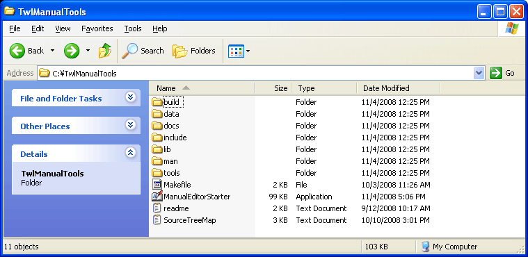

チュートリアルを開始する前に、開発環境のセットアップが正しく完了しているか確認をします。
TWL-ManualEditor は編集中のデータを、お使いのPC、IS- NITRO-EMULATOR、IS-TWL-DEBUGGER ハードウェア、いずれかの環境でプレビューする機能をもっています。
IS-NITRO-EMULATORもしくは、IS-TWL-DEBUGGER ハードウェアでプレビューする場合は、機器が正しく接続されているか確認してください。
アーカイブを任意の場所に解凍し、できたフォルダを開きます。

フォルダ内に含まれる、ManualEditorStarter.exeをダブルクリックしてTWL-ManualEditorを起動します。
ページファイルの拡張子(.ntpg)をエディタに関連付けするために、ファイル拡張子の関連付けバッチファイルを起動します。
$(TWL-ManualTools_Root) \ TwlManualTools \ tools \ ManualEditor \ 内にある、{setup_ManualEditor.bat} をダブルクリックして起動してください。
Windowsのコマンドプロンプト画面が開きますので、指示に従って画面を閉じてください。